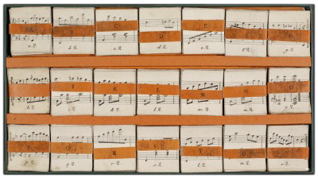

Critical Commentary
Description of Sources
Source A: Edition by C.C. Lose
Source A in original wrapping.
Source A in box without lid.
C.C. Lose, Copenhagen 1820/1821 (?).
Box: 19.7 x 35.8 x 1.7 cm; cards: c. 5.4 x 4.8 cm.
Title on label pasted on the wrapping: KALEIDAKUSTIKON, / en musikalsk Underholdning for Claveerspillere, / af / F. Kuhlau. / Kjöbenhavn. Hos C. C. Lose
223 cards. Incomplete; cards h3 to h10 lacking. Lid and instructions lacking.
DK-KkDet Kongelige Bibliotek, København Kuhlaus Samling (Fog nr. 215), mu6411.1250. ► Library record
Source B: Alternative edition by C.C. Lose
Card stand from Source B (Photo: Elisabet Andersson).
C.C. Lose, Copenhagen 1820/1821 (?).
Stand: c. 23 x 36 cm; cards: c. 5 x 5 cm.
Title on label pasted on the wrapping: KALEIDAKUSTIKON, / en musikalsk Underholdning for Claveerspillere, / af / F. Kuhlau. / Kjöbenhavn. Hos C. C. Lose
The wrapping and the label are identical to those of Source A. The engraving, however, differs from both Source A and C. Instead of the box serving as a stand for the selected cards, this edition includes a plate or a piece of cardboard lined with blue and orange paper or linen with three long pockets into which the cards are stuck.1Thanks are due to Musik- och Teaterbiblioteket in Stockholm for providing information and a digitization of their copy of the Kaleidakustikon.
231 cards. Instructions and box lacking.
S-SkmaMusik- och teaterbiblioteket, Stockholm Noter rar 710. ► Library record ► Digitization (PDF)
Source C: Edition by F.J. Weygand
Source C (Photo: Pierre Bergé & Associés).
F. J. Weygand, Amsterdam c. 1821.
An exemplar of the Kaleidakustikon was sold at an auction of Jean-Paul Morin's collection of curiosa on 19 December 2012 in Paris. Unfortunately it has not been possible to establish contact with the present owner of this exemplar.2Thanks are due to the auction house, Pierre Bergé & Associés, for making the illustration from the auction catalogue available for further studies and for forwarding DCM's request to the owner concerning the exchange of information. However, the auction house's illustration of the Dutch exemplar makes it possible to provide a crude source description of the item: The cards are placed in a box lined with orange linen. The lid and base are apparently hinged together employing the same orange linen. Each pile of cards is kept together by a white paper or cardboard strip without imprint. Contrary to Source A, there is no division of the box in three rows. This edition includes a blue plate similar to that of Source C serving as a stand for the cards. The illustration shows the entire cards k2–k3 and k5–k12 as well as the first page of the manual. See Instructions for a complete transcription of the text of the manual.
The source has not been available to the editors. All information is thanks to the auction house, Pierre Bergé & Associés.
230 cards. Incomplete; one card lacking.
Privately owned (?). Provenance: In Jean-Paul Morin's collection of curiosa until 2012. Sold at an auction of Jean-Paul Morin's collection in Paris by the auction house Pierre Bergé & Associés (19 Dec. 2012).
Evaluation of Sources
It has not been possible to determine whether Source A or B represents the first edition. Source A was best suited for a digital edition, since the box serving as a stand does not conceal the cards' numbers as in Source B and C, and it has therefore been chosen as main source. Source B has been consulted to complement the edition (cards h3 to h10).
On basis of the auction house's photo, Source C has been chosen as main source for the instruction manual which is lacking in SourcesA and B.
Emendations and variant readings
In the interactive computer screen version, the cards are reproduced in facsimile (photographic reproduction), unaltered except from a minor trimming in order to position the cards uniformly.
The emendations and notational modernizations listed below have been carried out in the edition's XML data and thus apply to the XML, PDF, MIDI, and MP3 files generated. In this context, the term 'edition' therefore refers to these edited formats rather than the photographic reproduction of the cards.
The cards h3, h4, h10, h11 and h12, defining the middle section to be in F minor rather than F major, are notated with three flats (B, A and D) instead of four. Consequently, the following cards in the middle row (h–o) are read in melodic F minor – that is, with the leading note E instead of E flat. For technical reasons this notation has been modernized to F minor in the present edition, employing the key signature of four flats but with the natural added to all Es in the row.
Abbreviated notation in piles i–n, employing white note heads with repetitive quaver rhythms () in the left hand, is expanded to quavers ( ).
Music
| Card | Stave | Comment |
|---|---|---|
| a6 | r.h. | A: note 6: ♭ added in ink |
| a6 | l.h. | B: rest missing |
| k5, k7 | r.h. | C: grace notes preceding note 2: demisemiquavers () instead of quavers () |
| o2–o12 | double bar-line emended to final repeat bar-line because of repetition marking on pile h cards |
Instructions
| Item | Sentence | Comment |
|---|---|---|
| 5 | 2 | ending comma emended to full stop |
| 6 | 2 | Buschstaben emended to Buchstaben |